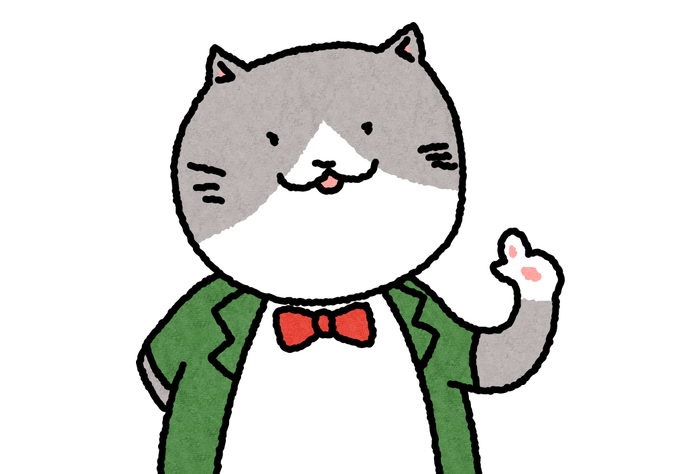

ネコ先生プロフィール
5歳のグレーのハチワレのオス、人間だと、36歳くらいかにゃ。
渋谷の新南口にほど近いビルの1階で箱の中で大きな声で泣いているところを保護猫団体の人に助けられたらしい。まだ、生まれて、2週間くらいだったとのこと。
その後、保護猫カフェデビューすることになるんだけど、そこで一緒になった仲間から、外で暮らすことの大変さをいろいろ聞いたもんだ。
そして、いまのパートナー（飼い主）と出会うことになる。彼らは、ネコを飼うのが初めてで、本や雑誌でいろいろ勉強したり、病院の先生やキャットシッターの人たち、保護猫団体の人たち、自治体の人たちに、よく聞いて、勉強してくれたので、それが、ボク自身の知識にもなっているという訳。
名前はともかく、みんなからは、ネコ先生と呼ばれているよ。
いつから、人間と会話できるようになったかって？いつだっけなあ、まだ、保護猫カフェにいた頃だったな。
もともと、人間の言葉はわかってたんだけど、あるとき、あのカリカリがほしいんだけどって、言ったら、店長には通じたんだよね。
いまのパートナーには内緒にしてるんだ。いろいろ、面倒だしね。
